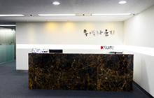

K-SURE 무역라운지 이용안내

K-SURE 무역라운지
한국무역보험공사는 국민과 함께하는 공공기관으로서의 사회적 책임을 다하기 위하여 대국민 서비스를 지속적으로 확대해 나가고 있습니다. 무역보험을 이용하고 계시는 고객 뿐 아니라, 수출 및
국제 비즈니스를 통해 국가경제 발전에 이바지 하고 계시는 중소중견기업인 모두가 사용하실 수 있는 업무공간을 마련하였습니다.
많은 이용 부탁드립니다.
고객행복센터
| 구분 | 용도 |
|---|---|
| 용도 | 바이어 상담, 회의 등 |
| 시설 | 10인실, 6인실, 4인실(총 5개) |
| 이용대상 | 중소중견기업 (무역보험 미이용 업체도 이용 가능) |
| 이용금액 | 무료 |
| 이용시간 | 오전 10:00 ~ 오후 05:30 (점심시간 12:00~13:00 제외) |
| 1일 최대 이용시간 | 1일 최대 2시간 |
| 이용신청 |
고객센터 앞 신청(전화 1588-3884, FAX : 02-6234-1407) ※ 강의실의 경우 이용 희망일 한달 전부터 신청가능 예약 희망일 3영업일 전까지 신청서 제출 |